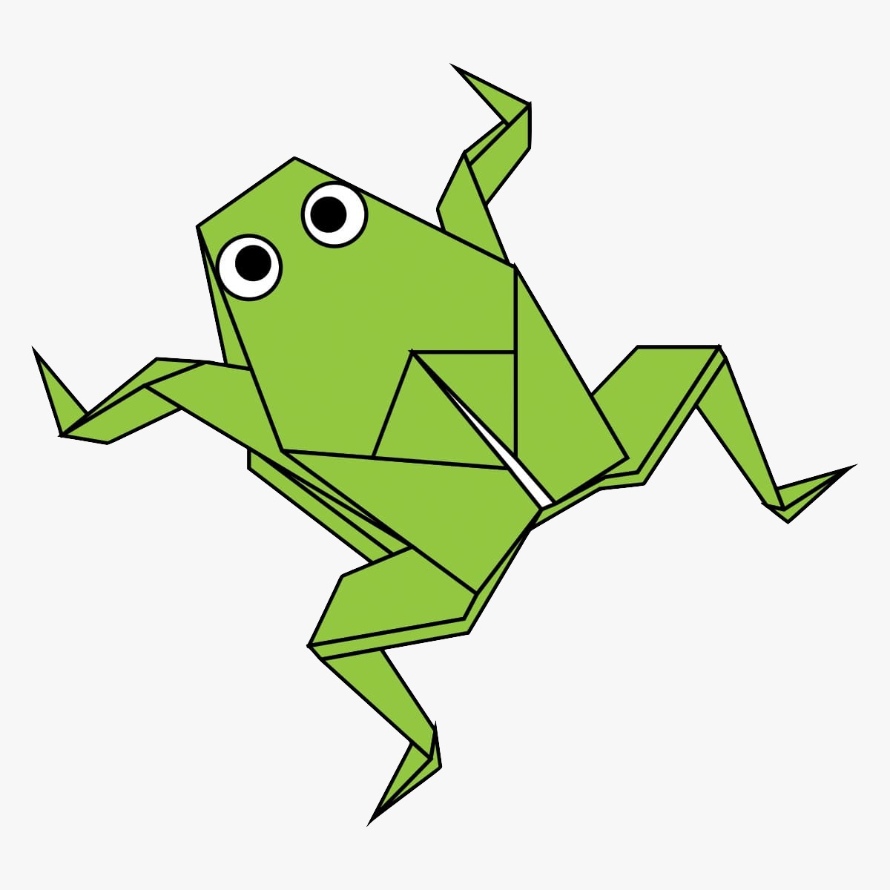
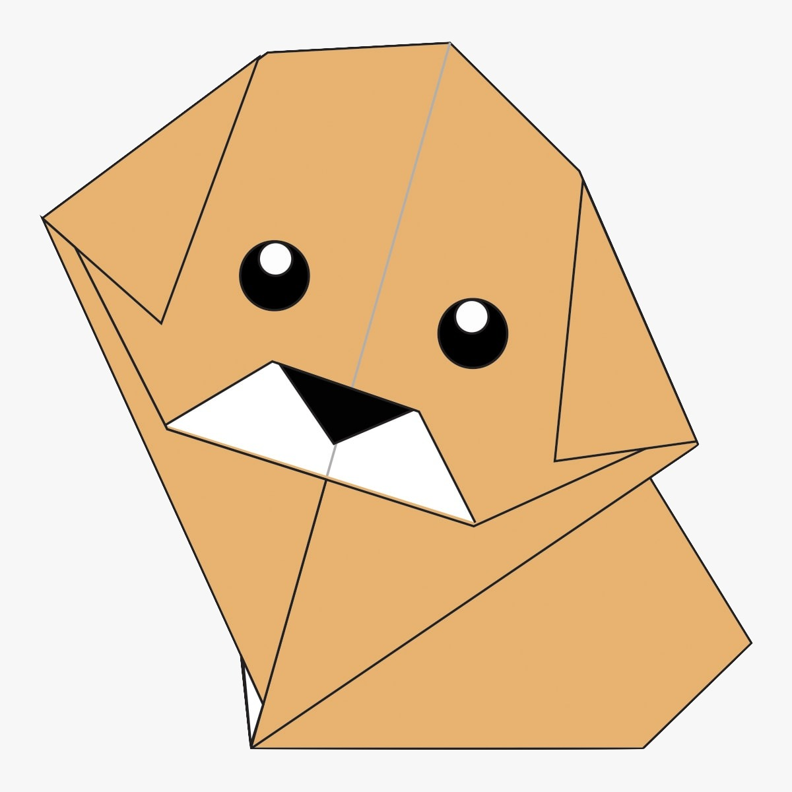

Origami Instructions and Diagrams
Step by Step diagrams are probably the most popular and easiest to follow way to
show how to fold things with paper.
Trying to find good origami instructions on the Internet can be a lot of work though .
To help your research we have put together the largest database of free origami diagrams anywhere on the Internet.

Camel
- Camel's ears are furry
- Camels can move easily across the sand because of its specially designed feet.
- When the find water , they will drink as much as possible.

Chameleon
- Chameleons are reptiles that are part of the iguana suborder.
- Changing skin color is an important part of communication among chameleons.
- Most chameleons have a prehensile tail that they use to wrap around tree branches.

Piegeon
- Pigeons are incredibly complex and intelligent animals.
- Pigeons are reowned for their outstanding navigational abilities.
- Pigeons have excellent hearing abilities.

Teddy-Bear
- The Teddy Bear's Picnic song was originally called The Teddy Bear Two Step.
- Winnie The Pooh was based on a real bear.

Panda
- Giant pandas are good at climbing trees and can also swim.
- Pandas go from pink to white and black(or brown).
- Pandas are "lazy" - eating and sleeping make their day.

Frog
- Dogs noses are wet to help absorb scent chemicals.
- The Beatles song 'A Day in the Life' has a frequency only dogs can hear.
- A blind man his guide dog hiked the Appalachain Trail.

Flying-Cicada
- All cicada species in North America came from a common ancestor.
- Cicada species switches from being on a 13-year cycle to a 17-year cycle.

Dog
- One gram of toxin produced by the skin of the golden poison dart frog could kill 100,000 people.
- There is a frog in Indonesia that has no lungs - it breathes entirely through its skin.